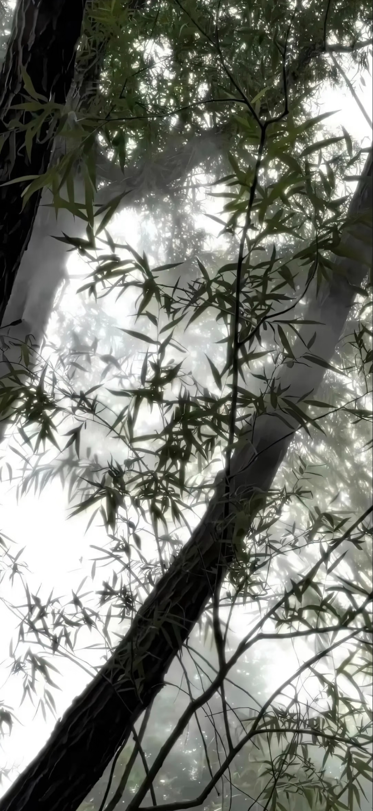
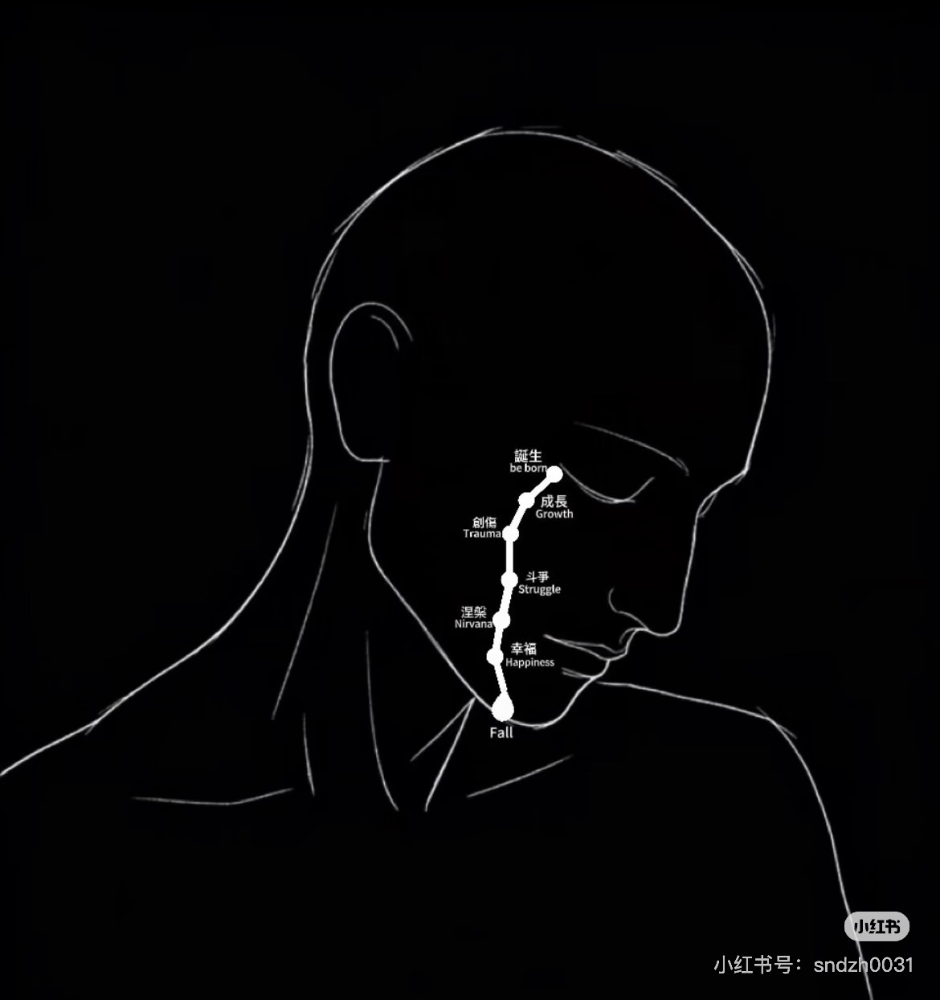

晴 · 話術留影
 № 01 · 拾光初見
№ 01 · 拾光初見 № 02 · 溫言細語
№ 02 · 溫言細語 № 03 · 浮生共語
№ 03 · 浮生共語 № 04 · 心意相通
№ 04 · 心意相通 № 05 · 朝暮相伴
№ 05 · 朝暮相伴 № 06 · 眉間心上
№ 06 · 眉間心上 № 07 · 靜水深流
№ 07 · 靜水深流 № 08 · 歲月不息
№ 08 · 歲月不息 № 09 · 餘韻悠長
№ 09 · 餘韻悠長
微風拂折竹青淺
卿卿如晤，見字如面
—— 案頭小引 · 心緒如織 ——
（點擊詩句顯現）
—— 澄心篇 · 落墨留痕 ——
（輕觸任意處 · 墨化水痕顯詩）
—— 靈犀篇 · 碧波微瀾 ——
（指尖引魚游弋 · 點水蕩開漣漪喚醒詩文）
—— 緘札篇 · 素履以往 ——
（輕觸折子 · 展閱全卷大頁）
№ 01 · 拾光初見№ 02 · 溫言細語№ 03 · 浮生共語№ 04 · 心意相通№ 05 · 朝暮相伴№ 06 · 眉間心上№ 07 · 靜水深流№ 08 · 歲月不息№ 09 · 餘韻悠長
№ 01 · 溫潤如玉，見字心安

№ 02 · 節奏極好，細膩熨帖

№ 03 · 溫柔自洽，不落俗套

№ 04 · 聽得懂欲言又止的心意

№ 05 · 獨特的氛圍感與定力

№ 06 · 讓人放下防備的真摯
№ 07 · 留白虛位
№ 08 · 留白虛位
№ 09 · 留白虛位
№ 10 · 留白虛位